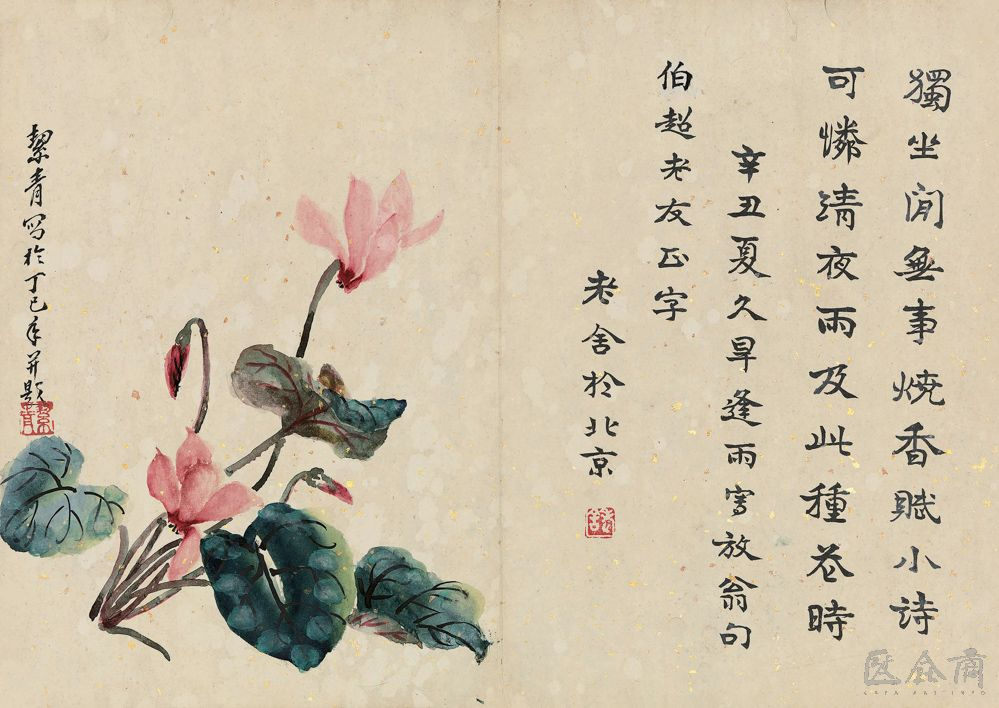

1. 课本书
老舍与养花 | Lao She and his flowers
作家老舍先生爱花，他养的花很多，满满摆了一院子。可除非是那些好种易活、自己会奋斗的花草，否则他是不养的。因为他知道北京的气候对养花来说，不算很好，想把南方的名花养活并非易事。
老舍把养花当作一种生活乐趣。他不在乎花开得大小好坏，只要开花，他就高兴。每天老舍像好朋友似的照管着花草。工作的时候，经常写几十个宇，就到院中去转转，瞧瞧这棵，看看那朵，有时拿起剪刀给它们剪剪枝，有时蹲下检几块小石头放在花盆里做点儿装饰，然后回到屋中再写一会儿，然后再出去，就这样脑力和体力很好地结合，身心也得到放松。
写作是件艰苦的工作，养花也是如此。有时赶上狂风暴雨，情况紧急，他就得劳驾全家人抢救花草。几百盆花，要很快地抢到屋里去，累得腰酸腿疼，热汗直流。第二天，天气好了，又得一盒盆地搬出去。可是他并不抱怨，在他看来，任何事都要有付出，不然怎么会有回报？这是生活的真理。
一来二去，他慢慢地总结出些养花的经验：有的花喜干，就别多浇水；有的花喜欢潮湿的环境，就别放在太阳地里。给花换盆剪枝施肥的活儿他越做越熟练，花生病长虫他也知道如何应付了。看着院子里那鲜艳的花朵，老舍自豪地说，“不是乱吹，这就是知识啊！多得些知识，定不是坏事。”
老舍很有爱心，更懂得快乐要分享。每到昙花开放的时候，他就约上几位朋友来家里赏花庆祝。花分根了，一棵分为几棵，他会毫无保留地送给朋友们。看着友人高兴地拿走自己的劳动果实，老舍心里十分欢喜。有一次，送牛奶的小伙子进门就夸“好香”！这让老舍先生感到格外高兴。
当然，也有伤心的时候。年夏天，下了暴雨，邻居家的墙倒了，菊花被砸死了一百多棵，这下可把老舍难受坏了，一连几天人们都看不到他脸上的笑容。
“有喜有悲，有笑有沮” 这是老舍对养花、对生活的体验。“我不知道花草们受我的照顾，感谢我不感谢，反正我要感谢它们。〞老舍在自己的文章中这样写道。从中我们不难看出老舍先生对大自然的热爱，对生活的热爱。

1.1. 生词
| No. | Word | Meaning |
|---|---|---|
| 1 | 养 | yǎng - v. to raise, to keep, to grow |
| 2 | 除非 | chú fēi - conj. only if, unless |
| 3 | 奋斗 | fèn dòu - v. to fight, to struggle, to strive |
| 4 | 乐趣 | lè qù - n. joy, pleasure |
| 5 | 在乎 | zàihu - v. to care, to mind |
| 6 | 朵 | duǒ - m. used for flowers and clouds |
| 7 | 剪刀 | jiǎn dāo - n. scissors |
| 8 | 捡 | jiǎn - v. to pick up, to collect |
| 9 | 装饰 | zhuāng shì - n. decoration |
| 10 | 结合 | jié hé - v. to combine, to integrate |
| 11 | 暴雨 | bào yǔ - n. rainstorm |
| 12 | 紧急 | jǐn jí - adj. urgent, emergent |
| 13 | 劳驾 | láo jià - v. to trouble sb. (to do sth.) |
| 14 | 抢救 | qiǎngjiù - v. to rescue, to save |
| 15 | 腰 | yāo - n. waist |
| 16 | 直 | zhí - adv. continuously, straight |
| 17 | 不然 | bùrán - conj. or else, otherwise |
| 18 | 回报 | huí bào - v. to repay, to requite |
| 19 | 真理 | zhēnlǐ - n. truth |
| 20 | 浇 | jiāo - v. to water, to pour (liquid on sth.) |
| 21 | 潮湿 | cháoshī - adj. wet, moist |
| 22 | 施肥 | shī féi - v. to apply fertilizer |
| 23 | 熟练 | shú liàn - adj. skilled, practiced |
| 24 | 应付 | yìng fu - v. to handle, to cope with |
| 25 | 鲜艳 | xiān yàn - adj. bright-colored |
| 26 | 自豪 | zìháo - adj. proud |
| 27 | 吹 | chuī - v. to boast, to brag, to blow |
| 28 | 爱心 | aì xīn - n. love, compassion |
| 29 | 分享 | fēnxiǎng - v. to share (good things such as joy and rights) |
| 30 | 昙花 | tánhuā - n. broad-leaved epiphyllum (type of plant) |
| 31 | 庆祝 | qìng zhù - v. to celebrate |
| 32 | 保留 | bǎoliú - v. to reserve, to save |
| 33 | 菊花 | júhuā - n. chrysanthemum (type of flower) |
| 34 | 砸 | zá - v. to crush, to smash |
| 35 | 悲（伤） | bēi (shāng) - adj. sad, sorrowful |
| 36 | 反正 | fǎn zhèng - adv. (used to indicate the same result despite different circumstances) anyway, no matter what |
| 37 | 热爱 | rè ài - v. to love ardently |
1.2. 注释
- 除非
“除非”, liên từ, biểu thị điều kiện duy nhất, giống với “只有”, đằng sau thường đi với “才、否则、不然”. Ví dụ：
- 可除非是那些好种易活、自己会奋斗的花草，否则他是不养的。
- 除非急需一大笔钱，我才会考虑卖了这房子。
“除非”,cũng là giới từ, biểu thị không bao gồm tính toán, giống với “除了”. Ví dụ:
- 这种机器，除非李阳，没人修得好。
- 日常工作他从来不过问，除非极特殊的问题。
- 他工作时不喜欢别人打扰，除非很重要的事，别人的电话她都不接。
- 除非偶尔跟家庭在客厅一边聊天一边看新闻，我平时一般都不看电视。
- A：这个周末你陪我去看场电影，行吗？ B：想让我答应你，除非这次你能付票。
- 直
“直”，làm phó từ có thể biểu thị luôn luôn, thẳng tuốt, trực tiếp, đằng sau là động từ đơn âm tiết. Ví dụ:
- 这趟车可以直达北京，非常方便。
- 直到今天，我也不明白他当时为什么发那么大脾气。
“直”, còn có thể biểu thị liên tiếp, không ngừng nghỉ (một động tác,hành vi). Ví dụ:
- 父亲听说儿子卖了房子，气得直发抖。
- 几百盆花，要很快地抢到屋里去，累得腰酸腿疼，热汗直流。
- B
- A
- B
- A
- 反正
“反正”, phó từ, biểu thị tình huống tuy không giống nhưng kết quả lại như nhau. Ví dụ:
- 不管你们谁去，反正我不会去。
- 我不知道花草们受我的照顾， 感谢我不感谢，反正我要感谢它们。
“反正”, còn biểu thị ngữ khí kiên quyết khẳng định. Ví dụ:
- 你别再说了，反正我是会考虑的。
- 算了，反正不是什么要紧事，还是别打扰他们了。
- 你别问那么多了，反正你也不敢问她的电话到吗。
- 反正事情也那样发生了，信不信，你随便吧。
- A：这是今年最流行的颜色，你真没眼力。 B：我反正只能穿黑色的。
- Phân biệt 应付 và 处理
共同点：Đều là động từ, đề có nghĩa là áp dụng phương pháp, biện pháp đối với người, sự việc.
- 如：依我看，以他现在有的经验应付/处理不了目前的工作。
不同点：
| 应付 | 处理 | |
|---|---|---|
| 1 | Thiên về biểu thị áp dụng phương pháp phù hợp với người và sự việc. 如：他们会想方设法说服你，你准备好怎么应付他们了吗? |
Thiên về nhấn mạnh giải quyết vấn đề. 如：严重的环境污染使人们深思该如何处理好人与自然的关系。 |
| 2 | Còn có ý nghĩa là làm việc không chăm chỉ, không có trách nhiệm, chỉ thể hiện tốt mặt bề ngoài. 如：小林学习不认真，完全是在应付父母和老师。 |
Không có ý nghĩa này. |
| 3 | Không có ý nghĩa này. | Còn có nghĩa là sắp xếp, xứ lý sự vật. 如：洗衣机的包装纸箱，既占地方又没什么用，快处理了吧。 |
| 4 | Không có ý nghĩa này. | Còn có nghĩa thanh lí . 如：这批过季的衣服尽快减价处理吧。 |
1.3. 扩展
问题：行动
| No. | Word | Meaning |
|---|---|---|
| 1 | 拆 | chai1 - to dismantle，tháo dỡ, dỡ ra |
| 2 | 撕 | si1 - to tear, xé |
| 3 | 摸 | mo1 - to touch, feel, stroke, sờ, chạm |
| 4 | 拍 | pai1 - to beat with the palm, vỗ, đập bằng lòng bàn tay |
| 5 | 抓 | zhua1 - to grab, túm, nắm, chộp, bắt |
| 6 | 捡 | jian3 - to pick up and object, nhặt (một vật) |
| 7 | 摘 | zhai1 - to pick a fruit, hái (trái cây) |
| 8 | 披 | pi1 - to put on a coat, cloak, or cape, khoác (1 cái áo) |
| 9 | 偷 | tou1 - to steal, trộm, cắp |
| 10 | 抢 | qiang3 - to rob, cướp |
| 11 | 捐 | juan1 - to donate, quyên góp, hiến tặng |
| 12 | 扶 | fu2 - to support (and prevent from failing), đỡ, nâng (tránh ngã) |
| 13 | 挡 | dang3 - to block, to get in the way of, chặn, cản trở |
| 14 | 栏 | lan2 - to block, to hold back, chắn, ngăn cản |
| 15 | 退 | tui4 - to retreat, rút lui, lùi lại |